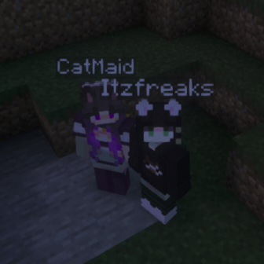

Interactive Coordinate Graph
Drag to pan, scroll to zoom, hover points for exact base data.
| Base | Known as / residents | Status | Dimension | Center | Sub-bases | Distance |
|---|
Dimension Split
Coordinate Quadrants
Y-Level Distribution
Distance From Spawn
Sub-Base Cluster Sizes
Axis Hotspots
Spawn Range Bands
Overworld vs Nether Scale
Notable Finds

No matter where you go, everyone's connected.